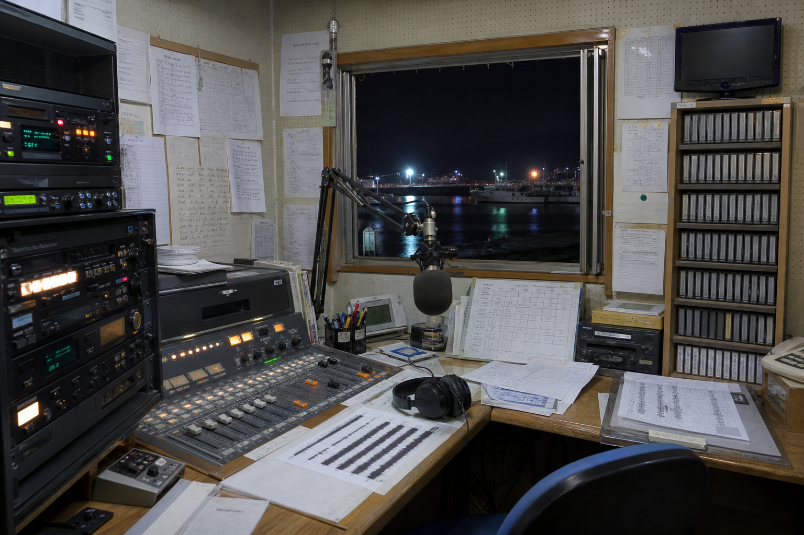

閉館特番のために使われた収録室。素材は番組用だが、時刻だけが資料館記録と合う。
収録素材
| 素材 | 状態 | 備考 |
|---|---|---|
| 灯台まつりCM | 公開可 | 観光用 |
| 閉館特番OP | 公開可 | 町長コメント |
| 無線記録C | 照合中 | 0:42に短い接点音 |
| 港湾気象読み上げ | 公開可 | 南西8m |
地域FMの番組表、録音台帳、無線記録の複写です。

閉館特番のために使われた収録室。素材は番組用だが、時刻だけが資料館記録と合う。
| 素材 | 状態 | 備考 |
|---|---|---|
| 灯台まつりCM | 公開可 | 観光用 |
| 閉館特番OP | 公開可 | 町長コメント |
| 無線記録C | 照合中 | 0:42に短い接点音 |
| 港湾気象読み上げ | 公開可 | 南西8m |